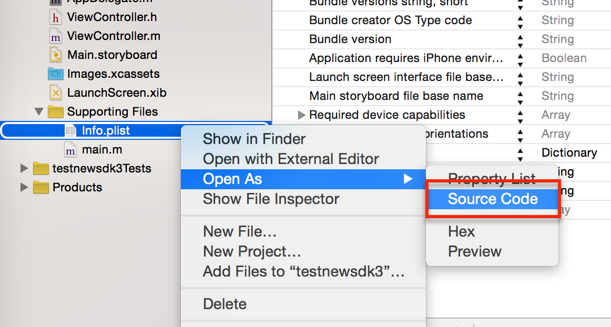

iOS Native SDK Installation
1. Download latest Jeapie iOS sdk from github
https://github.com/Jeapie/jeapie-ios
2. Copy jeapie folder into root of your ios mobile app
3. Select "Build Phases" and go to "Link Binary With Libraries".
You should see jeapie-sdk-x.x.x.a library
4. Add "-ObjC" linker flag to "Other Linker Flags" in Build Settings
5. Add APP_KEY and APP_SECRET to info.plist
5.1 Open info.plist as a Source file

5.2 Take APP_KEY and APP_SECRET keys from Step 3 "Add Jeapie sdk to your Mobile Application" in Jeapie Dashboard.
5.3 Paste xml into info.plist
<key>Jeapie</key>
<dict>
<key>APP_KEY</key>
<string>{PASTE_APP_KEY_FROM_JEAPIE_DASHBOARD}</string>
<key>APP_SECRET</key>
<string>{PASTE_APP_SECRET_FROM_JEAPIE_DASHBOARD}</string>
</dict>
6. Import Jeapie header file to AppDelegate.m
#import "jeapie/JBJeapieAPIService.h"
Warning! Warning! The path to JBJeapieAPIService.h depends on the location of jeapie folder in your project.
7. Add a couple of lines to AppDelegate.m
- (BOOL)application:(UIApplication *)application didFinishLaunchingWithOptions:(NSDictionary *)launchOptions {
// Enable Push notification
// support iOS7 and iOS8 push notifications
if ([application respondsToSelector:@selector(registerUserNotificationSettings:)]) {
UIUserNotificationSettings* notificationSettings = [UIUserNotificationSettings settingsForTypes:UIUserNotificationTypeAlert | UIUserNotificationTypeBadge | UIUserNotificationTypeSound categories:nil];
[[UIApplication sharedApplication] registerUserNotificationSettings:notificationSettings];
[[UIApplication sharedApplication] registerForRemoteNotifications];
} else {
[[UIApplication sharedApplication] registerForRemoteNotificationTypes: (UIRemoteNotificationTypeBadge | UIRemoteNotificationTypeSound | UIRemoteNotificationTypeAlert)];
}
// track push open
NSDictionary* userInfo = [launchOptions objectForKey:UIApplicationLaunchOptionsRemoteNotificationKey];
if (userInfo) {
[[JBJeapieAPIService sharedInstance] didReceiveRemoteNotification:userInfo];
}
return YES;
}
// get device token
- (void)application:(UIApplication*)application didRegisterForRemoteNotificationsWithDeviceToken:(NSData*)deviceToken
{
[[JBJeapieAPIService sharedInstance] didRegisterForRemoteNotificationsWithDeviceToken:deviceToken];
}
// track push opens
- (void)application:(UIApplication *)application didReceiveRemoteNotification:(NSDictionary *)userInfo
{
[[JBJeapieAPIService sharedInstance] didReceiveRemoteNotification:userInfo];
}